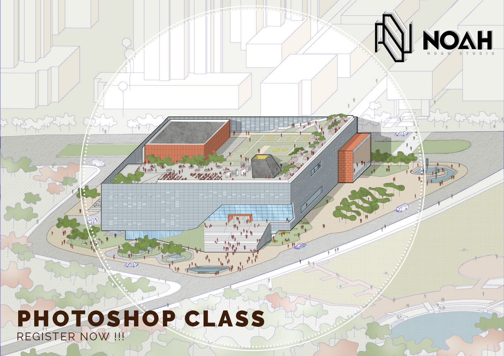

I am a professional with a background in architectural design, spatial coordination, and construction technology, specializing in modern BIM methodologies and computational workflows.
Hands-on experience in drafting technical details, managing design handovers, and preparing architectural models across varied international contexts
Focusing on 3D site scanning, material analysis, structural coordination, and digital tools that streamline construction engineering.
